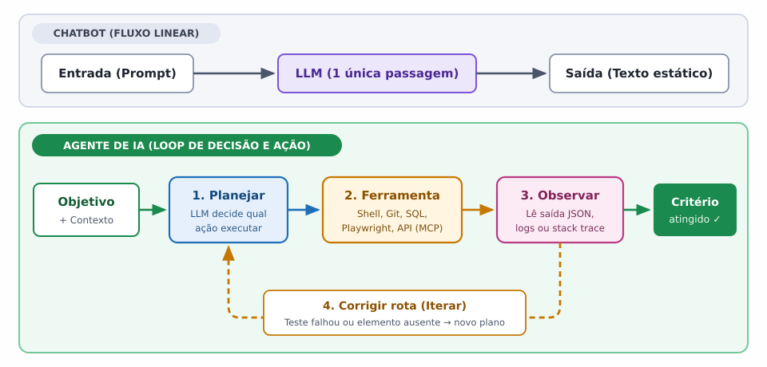
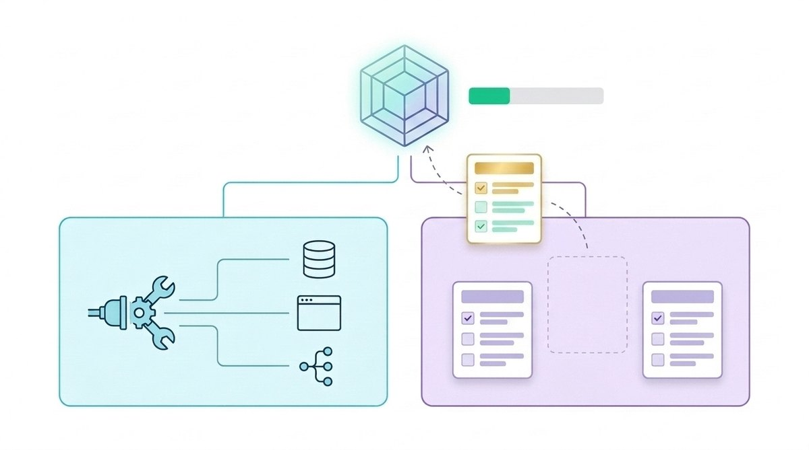
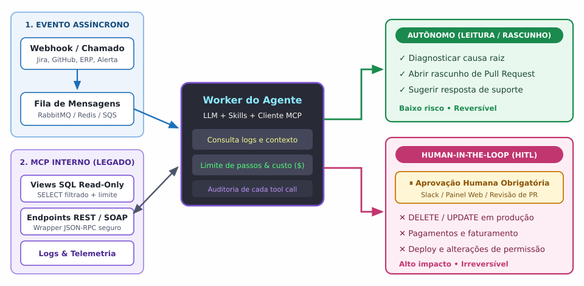

Oficina Prática (180 min) — Formato Sanduíche
Visão de Engenharia de Software: tiramos a “mágica” da frente — agentes são sistemas distribuídos com um motor de decisão não-determinístico.
| Tempo | Bloco | Foco Principal |
|---|---|---|
00:00 – 00:40 (40 min) |
1. Fundamentos | Loop agêntico, MCP, Skills e Memória (RAG vs. Contexto) |
00:40 – 00:55 (15 min) |
2. Setup | OpenCode no terminal, modelos gratuitos e primeiro diagnóstico local |
00:55 – 01:40 (45 min) |
3. Prática I | Criar uma Skill reutilizável e conectar o servidor @playwright/mcp |
01:40 – 01:55 (15 min) |
Intervalo | Pausa e ajustes de rede, dependências ou limites de taxa |
01:55 – 02:35 (40 min) |
4. Prática II | Playwright vs. Selenium, Accessibility Snapshots, CAPTCHAs e segurança |
02:35 – 03:00 (25 min) |
5. Produção | Sistemas legados, filas/webhooks, Human-in-the-Loop, custos e auditoria |
Chatbot vs. Loop Agêntico

Elaboração própria — arquitetura conceitual do ciclo de execução agêntico
A Base Científica: ReAct (2022–2023)
We explore the use of LLMs to generate both reasoning traces and task-specific actions in an interleaved manner, allowing for greater synergy between the two: reasoning traces help the model induce, track, and update action plans as well as handle exceptions, while actions allow it to interface with external sources, such as knowledge bases or environments, to gather additional information.
Concretely, on HotpotQA and FEVER, ReAct overcomes issues of hallucination and error propagation prevalent in chain-of-thought reasoning by interacting with a simple external API.
ReAct: Agindo Contra Alucinações

Fonte: Yao et al. (2023), ReAct (arXiv:2210.03629), Fig. 1
MCP: O “USB-C” dos Agentes de IA

Fonte: ilustração conceitual baseada na especificação oficial modelcontextprotocol.io
MCP por Baixo dos Panos: JSON-RPC 2.0
Um servidor MCP expõe três primitivos padronizados via stdio (local) ou HTTP (remoto):
- Tools (Ferramentas): funções executáveis com esquema JSON (SQL, clique no navegador).
- Resources (Recursos): dados somente leitura expostos por URI (arquivos, esquemas, logs).
- Prompts: modelos de instrução reutilizáveis pelo cliente.
Sem mágica: o cliente traduz a decisão do LLM em uma chamada JSON-RPC 2.0 tipada e devolve o retorno ao loop.
MCP vs. Skills: As Mãos e o Manual

Fonte: ilustração conceitual baseada no padrão aberto agentskills.io
Memória Externa: RAG (2020)

Fonte: Lewis et al. (2020), RAG (arXiv:2005.11401), Fig. 1
Quando Usar: Contexto vs. RAG vs. MCP
| Mecanismo | Como funciona | Limitação | Melhor uso em sistemas |
|---|---|---|---|
| Janela de Contexto | Tokens ativos na sessão atual do modelo | Caro, volátil e degrada com excesso de ruído | Estado imediato da tarefa, código aberto no momento |
| RAG (Base Vetorial) | Busca semântica por embeddings em trechos indexados | Não consulta estado transacional ao vivo | Milhares de PDFs, normas internas, manuais e wikis |
| MCP (Ferramentas) | Chamadas JSON-RPC estruturadas em tempo real | Requer contrato seguro e controle de permissões | SQL ao vivo, APIs REST/SOAP, Git, logs e estado atual |
Regra prática: RAG para conhecimento documental extenso; MCP para dados estruturados e ações em tempo real. Eles se complementam.
Aquecimento no OpenCode (15 min)
1. Instalação e abertura no repositório base
Roteiro de Aquecimento
- Selecione um dos modelos gratuitos nativos no OpenCode.
- Peça ao agente para mapear a arquitetura da API e do banco SQLite.
- Encontre o bug intencional e peça correção acompanhada de testes automatizados.
Observe o loop ReAct acontecendo ao vivo: leitura de arquivos → execução de testes → erro → correção.
Plano B e C: Contingência no Laboratório
Com Network Address Translation (NAT), várias máquinas saem pelo mesmo IP público e podem sofrer rate limit simultâneo.
| Ferramenta | Papel | Diferencial Técnico | Quando migrar |
|---|---|---|---|
| OpenCode | Principal | Modelos gratuitos nativos, MCP e padrão SKILL.md |
Uso padrão no terminal local |
| Mistral Vibe | Plano B | Skills nativas (comandos /), terminal, VS Code e web |
Falha local ou bloqueio do provedor |
| Gemini CLI | Plano C | Open-source; cota gratuita por conta Google individual | Bloqueio por IP compartilhado |
| Cline / Roo Code | IDE | Extensão VS Code com MCP + AI Studio / OpenRouter :free |
Fluxo visual no VS Code (API key) |
Infraestrutura de rede: mantenha Node.js e Chromium pré-instalados nas máquinas para evitar 30 downloads simultâneos na sala.
Criando uma Skill Reutilizável (20 min)
Estrutura no projeto
.opencode/
└── skills/
└── code-review-turma/
├── SKILL.md
├── references/
└── scripts/
Desafio: crie a Skill de Code Review (ou Gerador de Migrations) e invoque-a para padronizar um módulo do projeto base.
Metadados YAML são lidos no início; o corpo entra no contexto só quando a Skill é ativada.
Plugando o @playwright/mcp (25 min)
Arquivo opencode.json na raiz do projeto
Desafio Prático
- Salve
opencode.jsone reinicie o OpenCode. - Peça para abrir
books.toscrape.com(ou o app local). - Navegue numa categoria e salve título, preço e nota em
livros.jsonoulivros.csv.
Ferramentas: browser_navigate, browser_snapshot, browser_click e browser_type.
Como o Agente Enxerga a Web: Accessibility Snapshot

Captura real: books.toscrape.com
Saída de browser_snapshot
- link "Books to Scrape" [ref=e1] - link "Home" [ref=e2] - link "Travel" [ref=e4] - link "Mystery" [ref=e5] - heading "All products" [ref=e22] - link "A Light in the Attic" [ref=e25] - link "Tipping the Velvet" [ref=e28] → browser_click(ref="e4")
A árvore de acessibilidade entrega elementos semânticos com ref determinístico — sem screenshots caros nem seletores CSS frágeis.
Por que Playwright Leva Vantagem sobre Selenium

Fonte: medição real em books.toscrape.com (51.274 caracteres de HTML vs. 95 nós semânticos)
Onde a Automação Web Trava (e Quando Usar API)

Ilustração elaborada para a disciplina — arquitetura de integração web
Segurança: Indirect Prompt Injection (2023)

Fonte: Greshake et al. (2023), arXiv:2302.12173, Fig. 1
- Dados viram comandos: LLMs não separam rigidamente texto lido de instruções do sistema.
- Ataque remoto: um comentário oculto ou HTML invisível numa página pode mandar o agente exfiltrar segredos ou chamar APIs indevidas.
- Mitigação: privilégio mínimo, domínio permitido (allowlist) e aprovação humana antes de ações sensíveis.
Prática II: Teste de Estresse e Contornos (20 min)
Experimento: peça ao agente (via @playwright/mcp) para acessar uma página protegida por CAPTCHA ou fluxo de login complexo e observe no terminal onde o loop agêntico trava.
1. Estado Autenticado
Humano faz login uma única vez e salva cookies/tokens via storageState do Playwright para o agente reutilizar com escopo restrito.
2. Migrar para API
Se o serviço oferece API oficial, encapsule-a em um servidor MCP dedicado — menor custo, maior velocidade e contrato estável.
3. Pausar para Humano
Detectou desafio CAPTCHA ou 2FA? Em vez de entrar em loop infinito queimando tokens, o agente pausa e solicita intervenção humana.
Plugando Agentes em Sistemas Existentes

Elaboração própria — arquitetura de referência para agentes corporativos
Checklist de Engenharia para Produção
Segurança & Menor Privilégio
Exponha views SQL somente leitura, aplique rate limit por ferramenta e jamais confie em dados externos sem validação de esquema.
Controle de Custos & Limites
Defina teto de iterações (max_steps), timeout por chamada MCP e roteamento de modelos (modelo leve na triagem, avançado na decisão).
Observabilidade & Auditoria
Registre cada tool call, entrada, saída, tokens e latência — você precisa conseguir reproduzir por que o agente tomou uma decisão.
Avaliação Contínua (Evals)
Trate Skills e prompts como código versionado: rode suítes de testes automatizados antes de trocar o modelo ou atualizar instruções.
Quiz Interativo
Conecte-se à sala e teste suas decisões arquiteturais!
Resumo da Aula
Referências
- Yao, S. et al. (2023). ReAct: Synergizing Reasoning and Acting in Language Models. ICLR 2023.
- Lewis, P. et al. (2020). Retrieval-Augmented Generation for Knowledge-Intensive NLP Tasks. NeurIPS 2020.
- Greshake, K. et al. (2023). Not what you've signed up for: Indirect Prompt Injection. ACM AISec 2023.
- Model Context Protocol — Especificação Oficial (modelcontextprotocol.io).
- Agent Skills Standard — Especificação Aberta de Skills (agentskills.io).
- Microsoft — Playwright MCP Server (@playwright/mcp) e ambiente de prática Books to Scrape.
- Ferramentas práticas: OpenCode, Mistral Vibe e Gemini CLI.